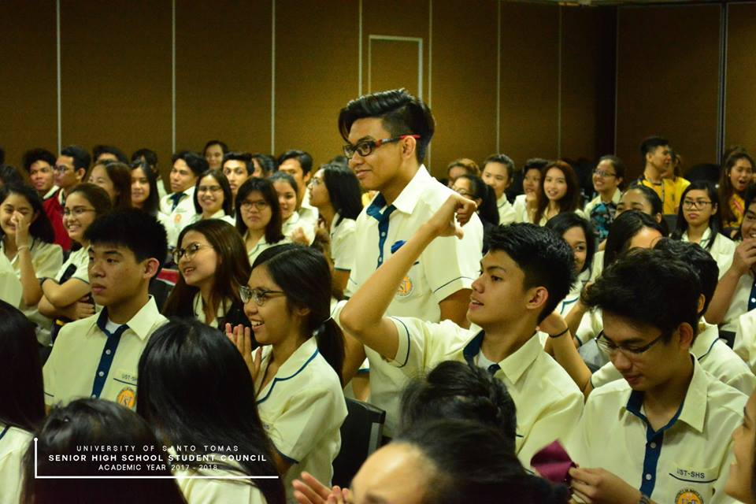
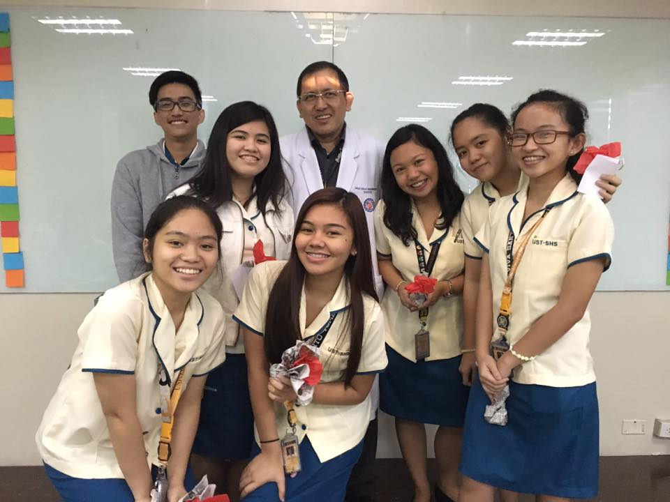
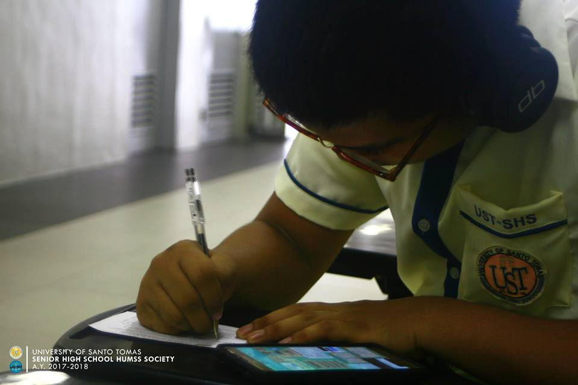
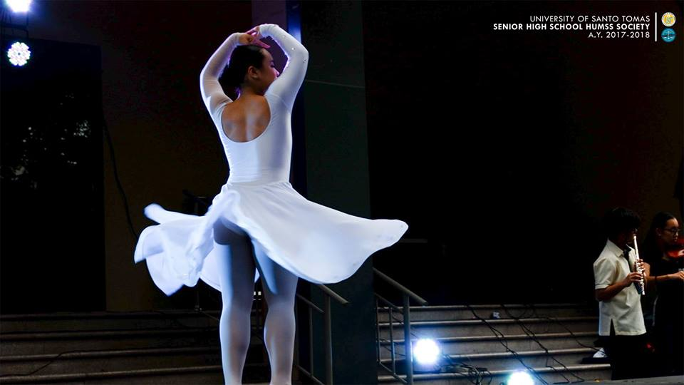
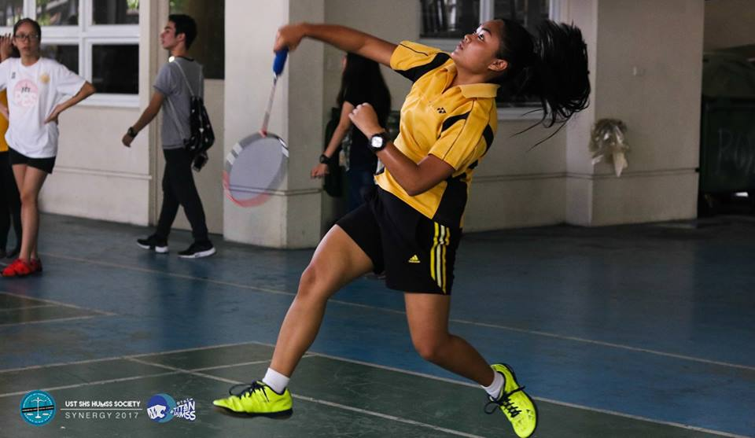

The Science, Technology, Engineering, and Mathematics Strand offers the needed academic grounding for those who intend to pursue tertiary programs that are geared toward the physical sciences, mathematics, engineering and technology. It has an immersion subject that provides a venue for the application of the knowledge gained in both the contextualized and specialized subjects.
The Accountancy and Business Management Strand provides adequate pre-university training for those who are inclined to pursue careers in entrepreneurship, banking, accountancy, finance and management in the corporate setting and in the tourism and hotel and restaurant industries. Like the other strands it is also composed of core, applied and specialized subjects. An important component of this strand is an off-campus practicum in relevant institutions.
Learners who dream of embarking on a profession that addresses concerns on health and wellness should take the Health Allied Strand. This strand equips learners with core competencies as well as specialized skills in the life sciences, thereby providing adequate preparation for their eventual admission in such tertiary programs as Biochemistry, Medical Technology, Nursing, Nutrition and Dietetics, Pharmacy, Physical and Occupational Therapy, and Speech Pathology. The strand also has an in-campus and off-campus practicum aimed at the practical application of the knowledge and skills gained in the core, applied and specialized subjects.
The Humanities and Social Sciences Strand is designed to equip the learners with the knowledge and skills required for those who wish to pursue academic degrees in the Liberal Arts (Philosophy, Literature, Communication Arts, Journalism), Education and Social Science (Sociology, History, Behavioral Science, Psychology and Asian Studies). It has three main components, a core curriculum that includes subjects common to all the strands, a set of applied subjects, the contents of which are the same in all strands but are aimed at developing a different set of competencies and specialized subjects. These specialized subjects differ in both content and competencies from the core and applied subjects.
The Music and Arts Strand prepares the learners for a tertiary education geared towards the performing arts, media and visual arts and industrial arts. It includes specialization subjects that provide the learners the needed competencies in music, theater, and creative arts. Students who wish to pursue a career in Interior Design, Industrial Design, Advertising Arts, Painting and Music should enroll in this strand. A final requisite of the strand is the mounting of Exhibit for Arts Production or Performing Arts Production.
Learners intent on pursuing a career in sports and wellness should take the Physical Education and Sports Strand. This strand provides adequate pre-university preparation for those who like to specialize in Physical Education and Sports Science at the tertiary level. The curriculum includes specialized subjects in safety and first aid, coaching and officiating, fitness and sports recreation leadership, human movement and an in-campus and off campus practicum.
